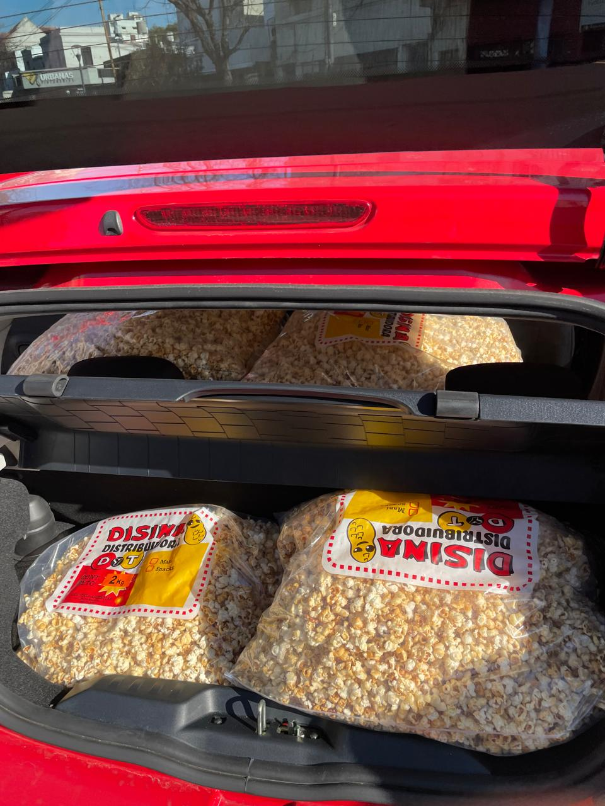
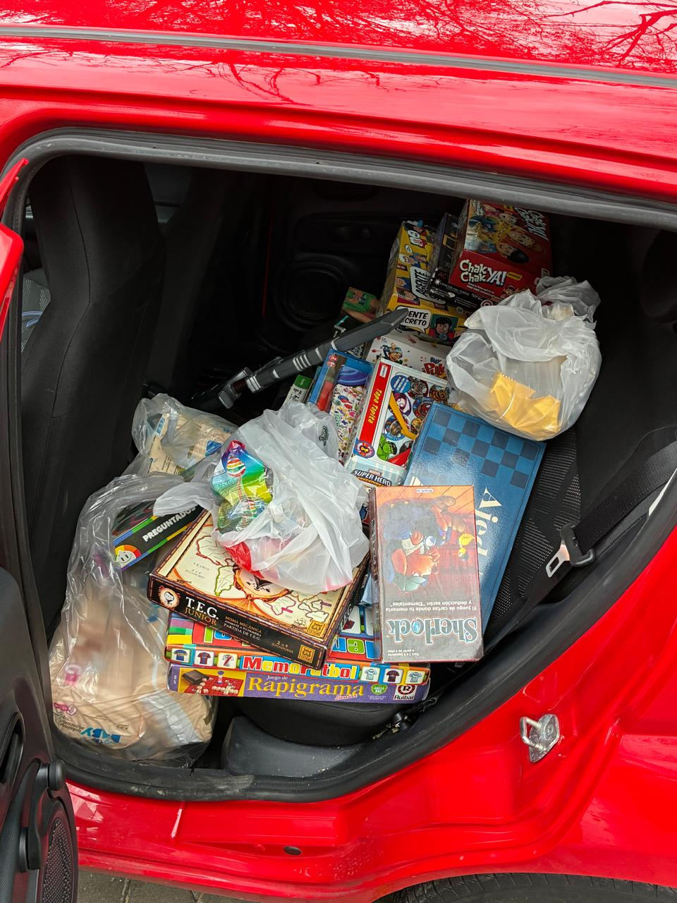
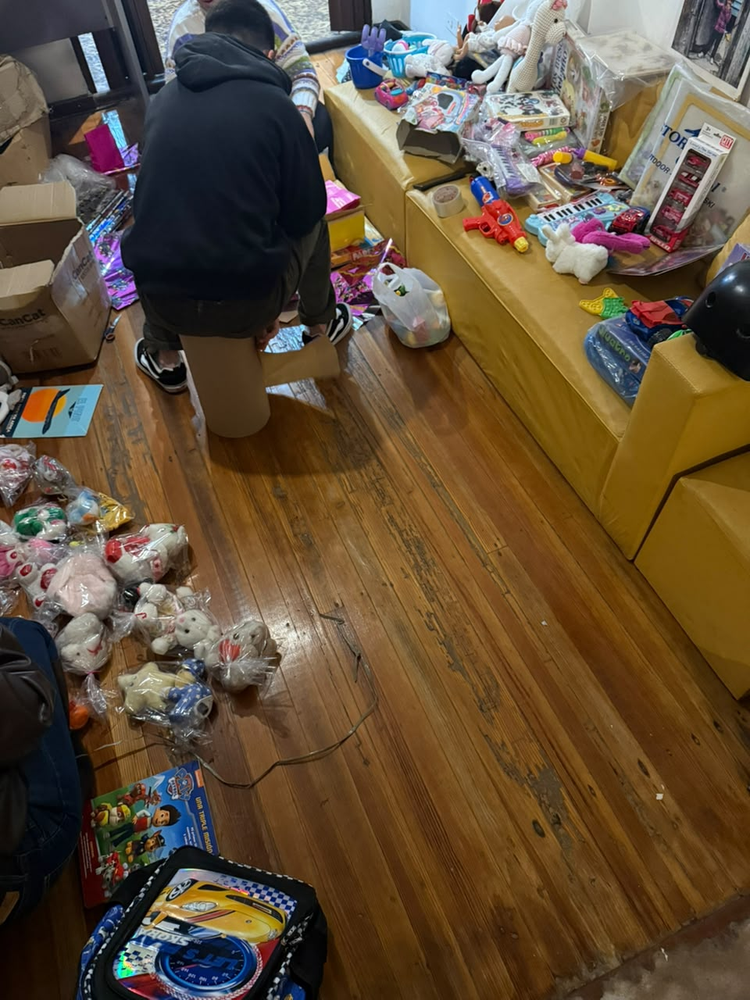
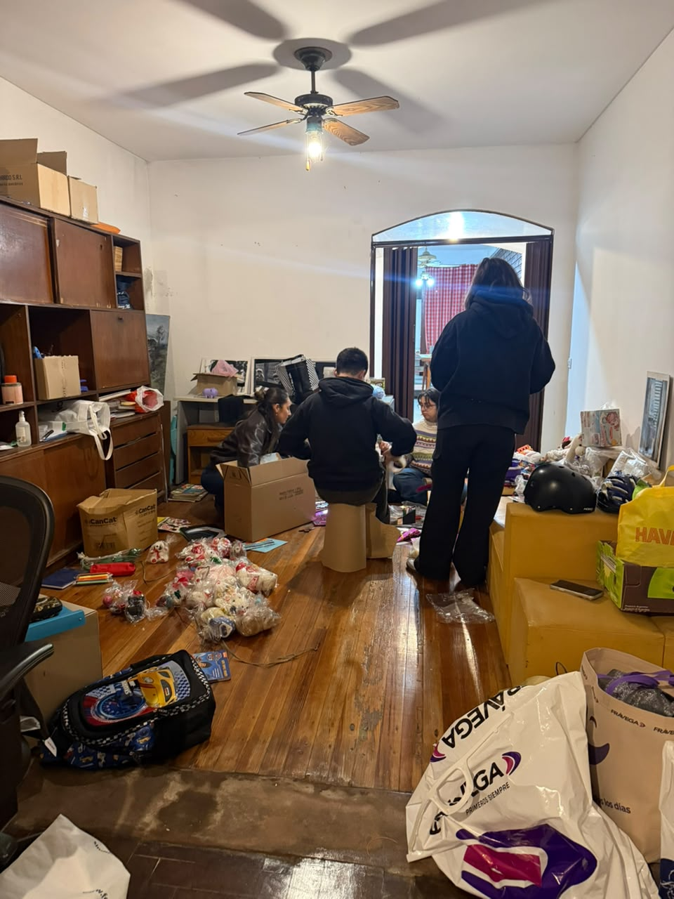
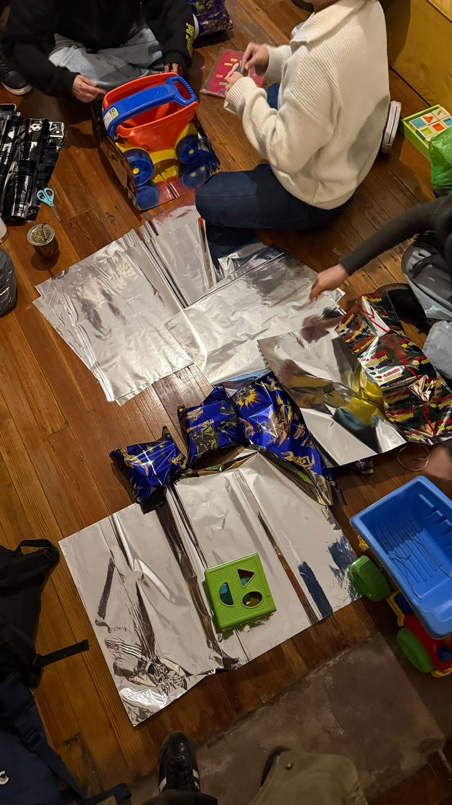
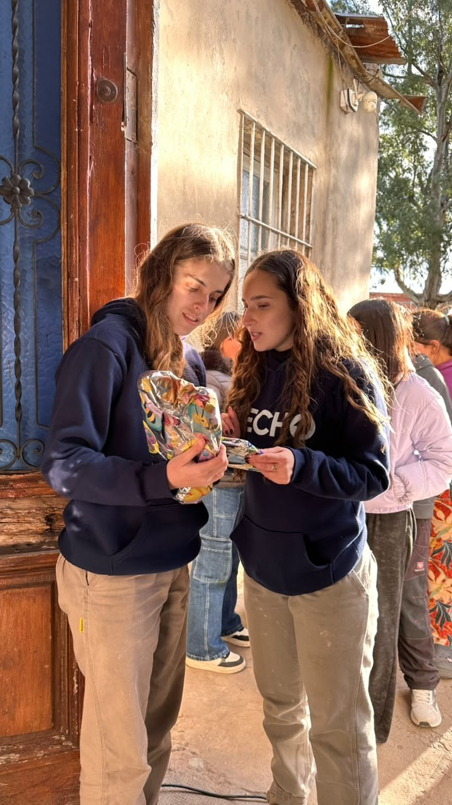

Colectas Solidarias
Recolección de artículos de primera necesidad — ropa, calzado, juguetes, pañales y útiles escolares — para familias de los barrios donde trabaja TECHO, organizada por el equipo de voluntariado de cada sede. Es distinta de la Colecta Anual oficial de TECHO, que es una campaña nacional de recaudación de fondos en dinero (abril-mayo), con la meta de financiar viviendas de emergencia.
Qué le queremos contar al visitante
- La diferencia entre esta colecta de artículos (organizada por sede) y la Colecta Anual nacional de dinero: son dos formas distintas de donar, con objetivos distintos.
- Qué necesidades concretas cubre: ropa de abrigo en invierno, útiles al empezar el ciclo escolar, juguetes para el Día del Niño, pañales todo el año.
- Cómo se entregan los artículos: no se reparten al azar, se coordinan con referentes del barrio según las necesidades relevadas.
Actividades y experiencias del visitante
- Donar artículos en los puntos de recolección de la sede (oficinas de TECHO, puntos aliados o eventos puntuales).
- Sumarse como voluntario a la clasificación y armado de los bolsones o kits que después se entregan en el barrio.
- Participar de la jornada de entrega junto a las familias, cuando la sede lo habilita a voluntarios externos.
Datos útiles
- Ubicación
- Se dona en la sede de TECHO Argentina (CABA) o puntos aliados, y se entrega en barrios de la Zona Sur del GBA (Quilmes, Florencio Varela, entre otros).
- Fechas
- Campañas puntuales según la época del año: inicio de clases, invierno, Día del Niño; se confirman con antelación en el calendario de la sede.
- Duración
- La donación en sí toma minutos; la jornada de clasificación como voluntario dura unas 2-3 horas.
- Acceso
- Donar no requiere inscripción previa; sumarse a clasificar sí se coordina con la sede.
Fotos






Recomendaciones para el visitante
Antes de donar, conviene revisar en la web o redes de TECHO qué artículos necesita la campaña vigente: no todas las colectas piden lo mismo.
La ropa y el calzado se reciben en buen estado; los juguetes y útiles, nuevos o en muy buen estado, pensando en que se entregan a otra familia.